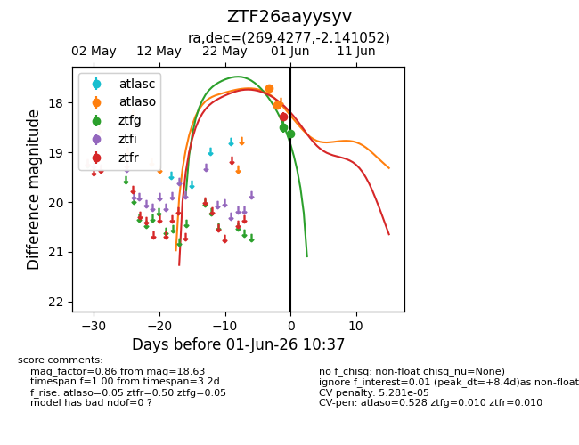
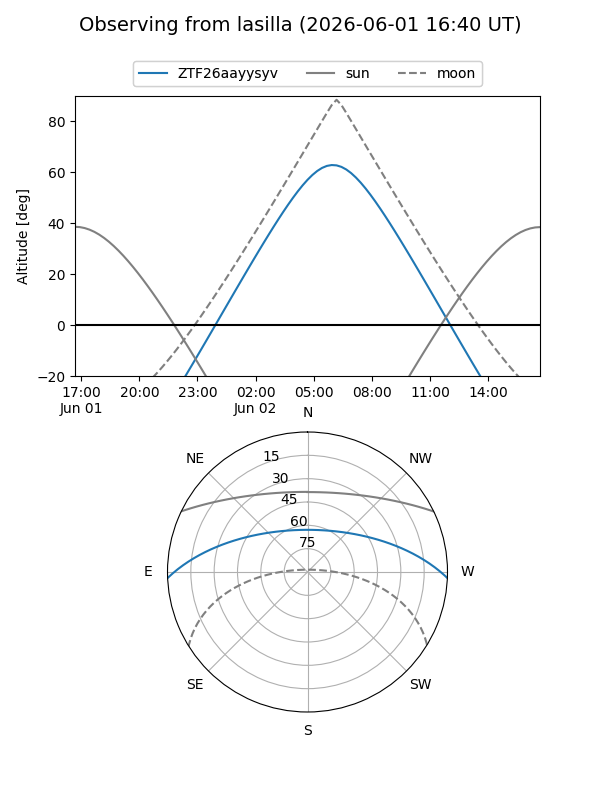
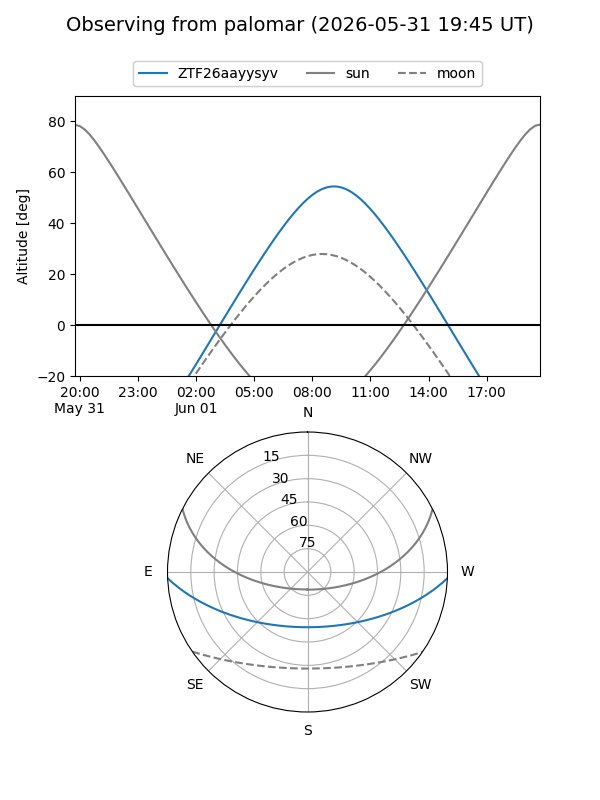
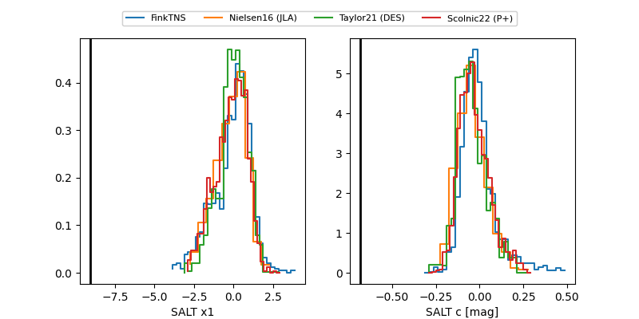

ZTF26aayysyv
Target ZTF26aayysyv at 2026-06-01 10:38
Aliases and brokers:
lsst-FINK: link
lsst-Lasair: link
lsst-ALeRCE: link
ztf-FINK: link
ztf-Lasair: link
ztf-ALeRCE: link
alt names
ZTF26aayysyv (ztf,fink_ztf)
Coordinates:
equatorial (ra, dec) = 269.4277,-2.14105
equatorial (HMS+DMS) = 17:57:42.66,-02:08:27.79
galactic (l, b) = (24.7878,+10.92668)
Flags:
likely cv: !
Photometry:
last atlaso=18.04, ztfg=18.63, ztfr=18.28
2 atlaso, 2 ztfg, 1 ztfr detections
Lightcurve

Visibility


Additional plots
